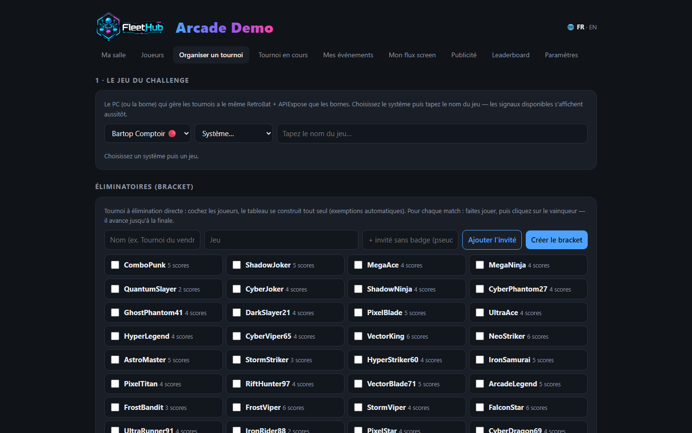
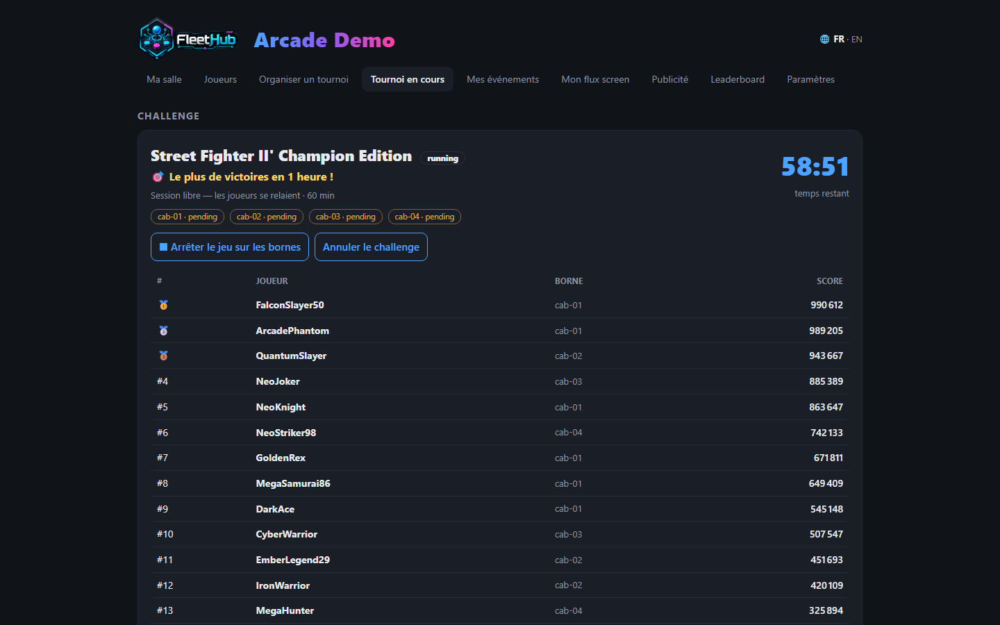

Organisateur de tournois
Depuis la console du hub, deux onglets font tout : Organiser un tournoi (préparer le challenge) et Tournoi en cours (l'ouvrir, le lancer, le suivre). Une règle d'or : tout tester avant l'événement.

Le déroulé d'un challenge, en 60 secondes
- Organiser : borne de référence → système → jeu (les versions RetroAchievements sont marquées 🏆 et priorisées ; les 5 derniers jeux se relancent en un clic). Les signaux du jeu se vérifient automatiquement à la sélection.
- Écrivez l'objectif en toutes lettres (« Le plus de buts en 5 minutes ! ») — c'est lui que les joueurs verront en gros sur les bornes — et choisissez le type de défi.
- Ouvrir le challenge (onglet Tournoi en cours) : chaque borne libre affiche l'annonce plein écran — fanart du jeu, objectif, conditions d'accès, compte à rebours, QR géant. Les joueurs scannent pour prendre leur borne. À zéro, le jeu se lance tout seul.
- Chaque joueur appuie sur START : sa partie se fige sur la ligne de départ et son pseudo passe 👍 Ready dans votre console.
- Lancer le challenge : décompte 5-4-3-2-1 dans le jeu sur toutes les bornes, départ simultané à la seconde près.
- À la fin : chaque borne affiche le résultat et le rang du joueur, le jeu se ferme proprement, le podium est archivé — et visible d'un clic dans l'historique.

Les quatre types de défis
| Type | Objectif | Classement |
|---|---|---|
| ⏱ Chrono | Le plus haut score dans le temps imparti | Score |
| 🏁 Course | Le premier à N × un signal (« 15 anneaux ») | Temps le plus court |
| ⚡ Contre-la-montre | Le premier à UN signal (niveau terminé, boss vaincu) | Temps le plus court |
| 💀 Survie | Le signal choisi = fin de partie (game over) | Temps le plus long |
Tout est mesuré dans la mémoire du jeu (signaux .MEM) — pas de pointage manuel, pas de triche possible.
Conditions d'accès et équité
- Réservez un challenge aux habitués : « 5+ scores en salle », « 2+ participations » — vérifié au scan du QR, refus expliqué au joueur, conditions annoncées sous l'objectif sur les bornes.
- Équité automatique : un challenge joué à moins de 2 participants réels (START appuyé) n'est jamais comptabilisé — ni records, ni trophées. Vos coupes gardent leur valeur.
✅ Tester avant l'événement (indispensable)
- Les signaux se vérifient seuls à la sélection du jeu (score live / records / nombre de signaux exploitables). Sans signaux : pas de « score live », seul « records » reste possible.
- Manche de test : cochez « Test » à la création — workflow complet (annonce, START, décompte, chrono, podium) mais rien n'est enregistré ni publié.
- Rejouez le geste des joueurs : scan du QR, START, départ — le parcours exact du jour J.
Session libre (passages enchaînés)
Pour un créneau de 1 à 4 heures sur N bornes réservées : choisissez une durée d'1 h ou plus — les joueurs se relaient (le badge du moment fait foi, chaque marque compte pour son joueur), le classement par joueur s'alimente en direct, et le podium reste affiché tant que vous ne routez pas l'écran ailleurs.
Éliminatoires (brackets)
Dans Organiser : cochez les joueurs (invités sans badge acceptés), le tableau se construit seul (exemptions automatiques). Faites jouer chaque match — un challenge par match si vous voulez — puis cliquez sur le vainqueur : il avance jusqu'à la finale et le champion est couronné.
Écrans, téléphone et événement ponctuel
- Chaque écran de la salle se pilote depuis la console (guide gestionnaire) ; le leaderboard plein écran affiche le logo du jeu et les scores en direct.
- Les joueurs suivent le challenge sur leur téléphone : objectif, décompte, temps restant, top 10 final — et les notifications les font revenir (« ton record vient d'être battu »).
- Pour un week-end de tournoi dans une salle non licenciée à l'année, l'Event pass (30 jours, toutes bornes) est fait pour ça — nelfetech.com/salles.
- En stream, l'édition Studio de Retro Creator ajoute Live Contest, scoreboard et podium d'animation (guide streamer).